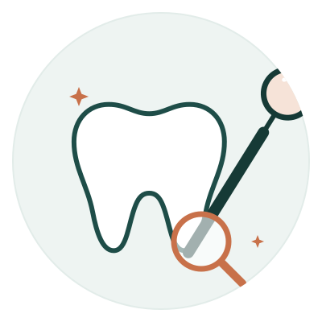

Valoración y odontología general
Revisión completa de dientes y encías para saber cómo está tu boca y qué necesita. Incluye limpiezas, resinas (calzas) y control de caries. Es el punto de partida para cualquier tratamiento.
Es la primera cita recomendada si hace tiempo no te revisas o no sabes qué tratamiento necesitas.
Agendar mi valoración